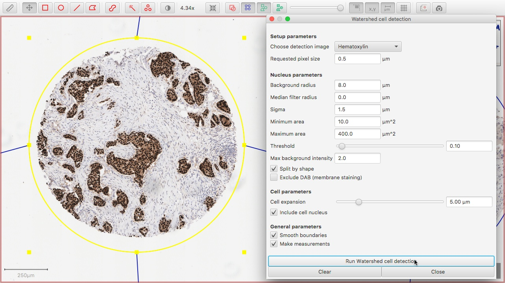
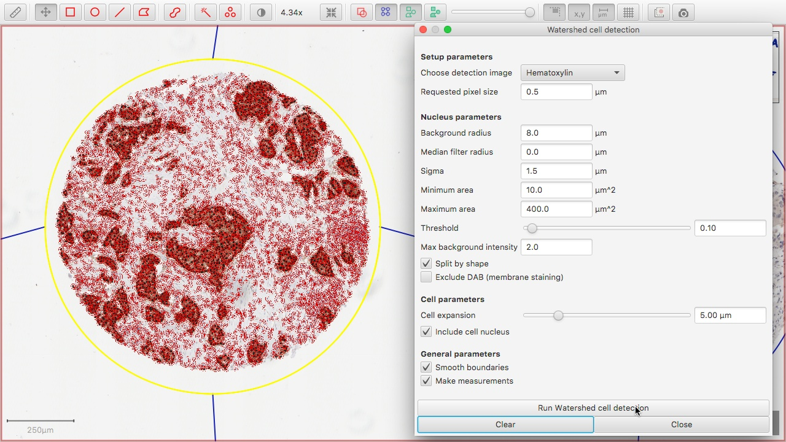
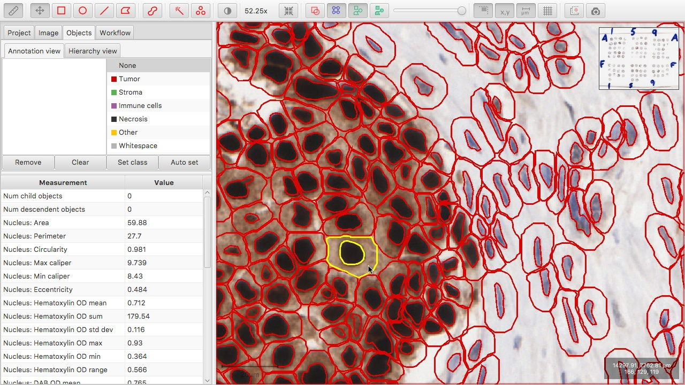
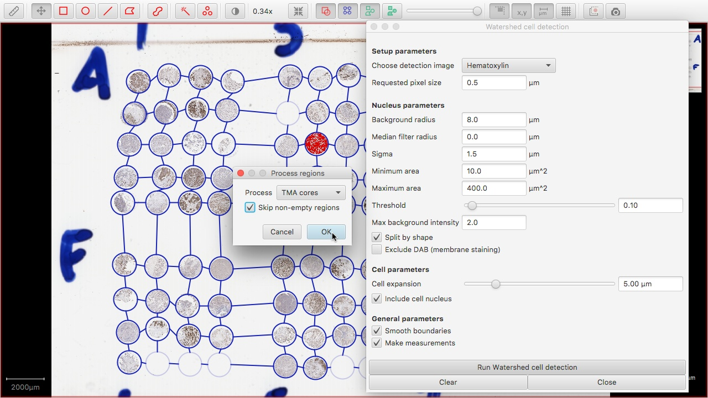
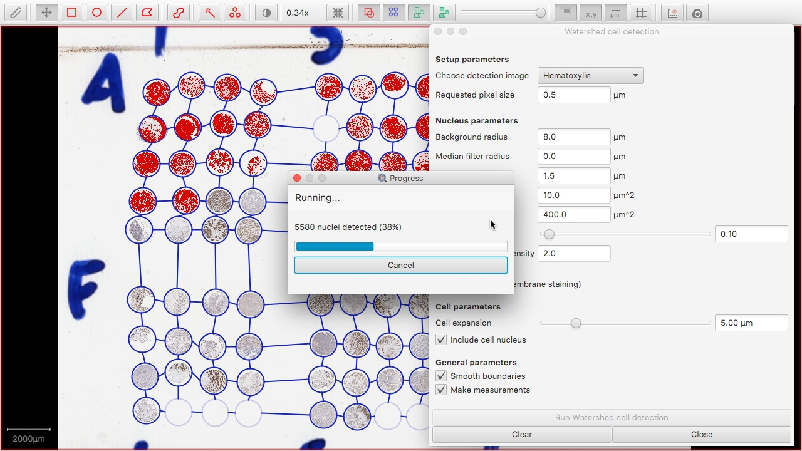

Detect cells by identifying individual nuclei, and expanding the nuclei to approximate the full cell area.
Tips
- Test out different detection settings on several individual cores (or a smaller annotation) before finalizing which settings to use across the entire the slide.
- Where there is a strong nuclear counterstain, first try 'Hematoxylin' as the detection image. If the staining is more pale, or positive DAB-stained cells appear very light, try 'Optical density sum'.
- Setting the 'cell expansion radius' to zero results in only nuclei being detected. However it can be beneficial to increase the expansion even for nuclear biomarkers, because this enables the calculation of additional features (e.g. the nuclear-to-cytoplasmic area ratio) that may be useful during later classification of different cell populations.
- Once you are satisfied with the detection settings, apply double-click outside any TMA core or annotation to ensure that no object is selected and then press 'Run' in the detection dialog box. When prompted, choose to process 'All TMA cores'.
- If cell detection has already been applied to any cores with the same settings, choosing 'Skip non-empty regions' may reduce processing time by ensuring that these will not be recalculated. However, for reproducibility reasons it is generally important to ensure that the same detection settings are applied across the entire slide, and therefore this option should not be selected if there are cells on the slide which were detected using different settings.
Screenshots

Cell detection dialog box.

Results of automated cell detection.

Viewing features for each individual cell inside the 'Objects' pane of the Analysis Panel.

Starting the application of cell detection to all TMA cores on a slide.

Detecting cells across a full TMA slide.